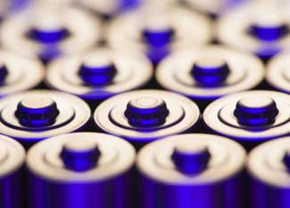

Although one company claims their batteries keep going and going and going…the truth is your batteries will eventually run out. After powering our remote controls, tape recorders and electric shavers, the average person will throw away eight batteries this year, on average. But by switching to rechargeable batteries, you’ll save money and take advantage of “renewable energy.”
While it may seem cheaper to buy a standard pack of alkaline (AA, AAA, C, D or 9-volt) batteries, making the switch to rechargeable batteries can actually cut down on your spending over time. Despite the initial $40 price tag (for a typical charger and batteries), rechargeable batteries can last up to 1,000 charges (longer if stored in the fridge), saving you about $80 a year, on average.
When taken to landfills, most batteries (even rechargeables) can release harmful metals such as mercury, lead and cadmium into the environment. The good news is rechargeable batteries are surprisingly easy to recycle. And, because batteries can be recharged and reused numerous times, they contribute less waste to landfills.
There are three main types of rechargeable batteries. The nickel cadmium battery (NiCd) is known for its long life but lower voltage potential than its competitors. Another type, the nickel-metal hydride (NiMH) has higher voltage that the NiCd, but requires more charges.
A step above the rest, the lithium-ion battery is more expensive than other rechargeable batteries, but stores more energy and lasts longer between charges. They’re perfect for battery-operated tools and they’re better for the environment because they don’t contain harmful toxins. And since lithium is a natural metal, it is available in great quantities.
After numerous charges, even rechargeable batteries eventually expire. Recycling can prevent toxins from entering the environment, so it is a better choice than throwing them in the trash. To find a site to recycle your household batteries near you, visit the Rechargeable Battery Recycling Corporation Web site or call 877-273-2925. If for some reason there is not a site in your area to recycle your other rechargeable batteries, such as old cell phone batteries, Earthworks can send them off for you. All services are free.
Online rechargeable battery reviews
Recycling rechargeable batteries information
More on the benefits of rechargeable batteries
|
 GETTY IMAGES Many claim that rechargeable batteries are a better solution than alkaline, but are rechargeable batteries really worth the extra money? |
|
|